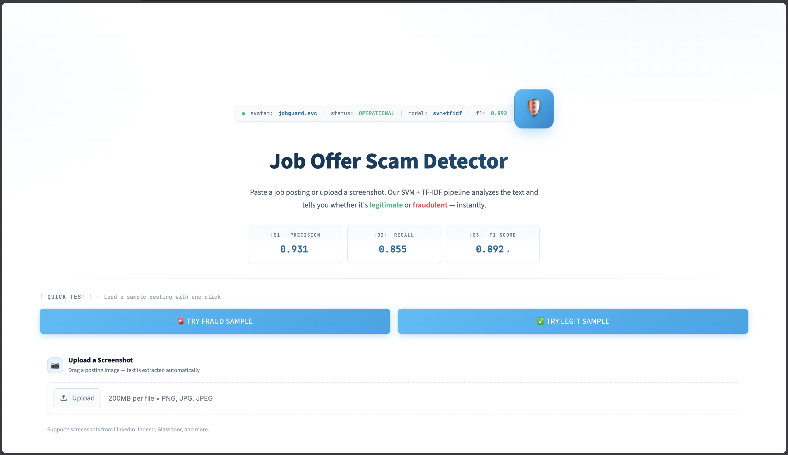
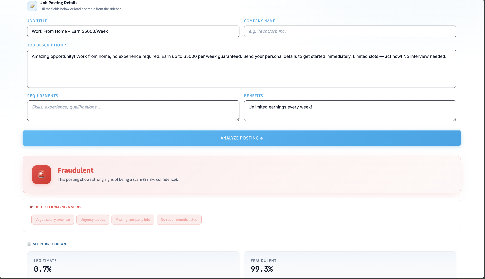
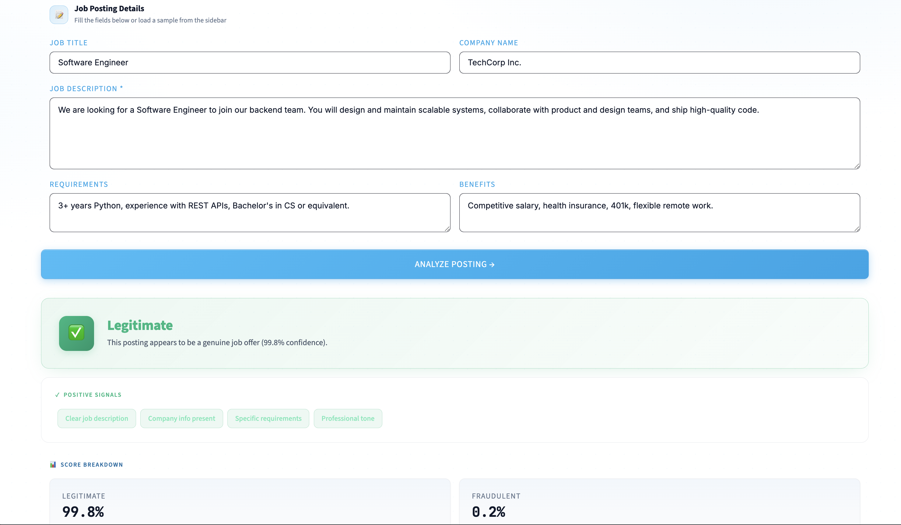
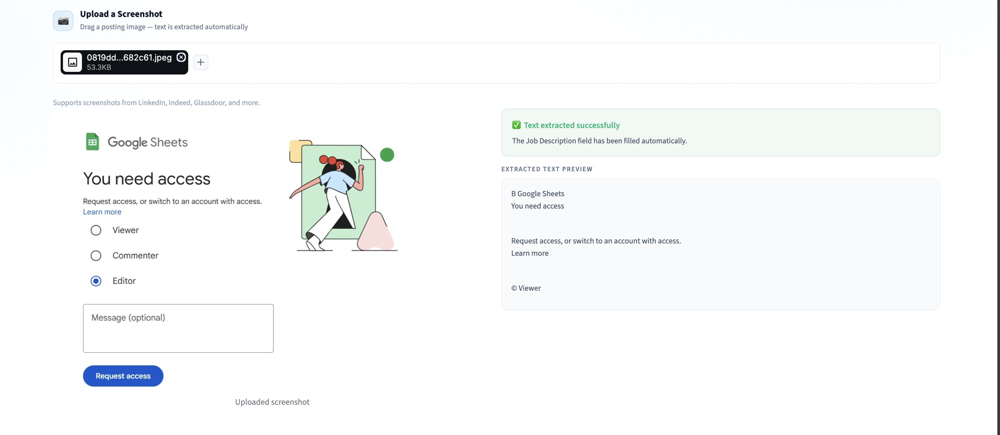
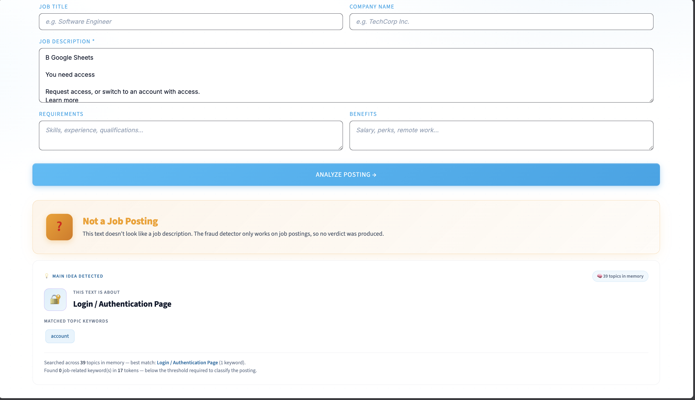
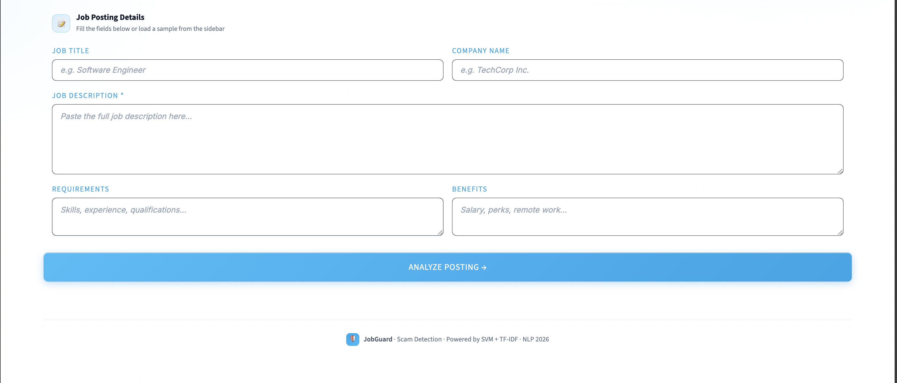

A complete classical-NLP pipeline that automatically classifies job postings as legitimate or fraudulent — achieving F1 = 0.892 on the EMSCAD dataset using SVM + TF-IDF.
EMSCAD dataset · 17,880 postings · 4.84% fraud
NLTK lemmatization, stopwords, regex cleanup
BoW vs TF-IDF vs LSA — TF-IDF wins
SVM vs LR — Calibrated SVM deployed
5-fold CV + threshold tuning to 0.30
Streamlit app + OCR + scope gate

Status bar showing model health, KPI cards, and one-click sample buttons.

"Earn $5000/week" scam triggers warning signs: vague salary, urgency tactics, missing company info.

A Software Engineer role at TechCorp gets all 4 positive signals: clear description, specific requirements, professional tone.

Tesseract OCR reads job postings from images. Cached per file_id so it never clobbers manual edits.

Refuses to classify out-of-domain inputs. Instead identifies the real topic — Login Page, Sports, Food, etc.

Five fields covering title, company, description, requirements, benefits — combined into one document for the classifier.
| Representation | Algorithm | Test F1 | ROC-AUC |
|---|---|---|---|
| TF-IDF ⭐ | SVM (Calibrated) | 0.892 | 0.985 |
| BoW | Logistic Regression | 0.825 | 0.980 |
| TF-IDF | Logistic Regression | 0.793 | 0.986 |
| BoW | SVM (Calibrated) | 0.728 | 0.971 |
| LSA | SVM (Calibrated) | 0.443 | 0.942 |
| LSA | Logistic Regression | 0.395 | 0.942 |
Key insight: TF-IDF + Calibrated SVM dominates the test set, reaching F1 = 0.892 at the tuned threshold of 0.30. LSA's dense projection compresses out the rare scam vocabulary that drives this problem, dropping F1 below 0.45.